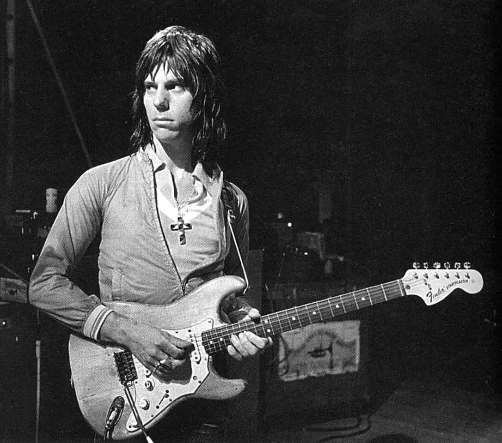

Стив Хиллидж

Ранние годы
Стив Хиллидж родился 2 августа 1951 года в лондонском районе Чингфорд. Ещё в школе он пристрастился к музыке и стал
участником блюз-роковой группы Uriel, в которой помимо него играли Дэйв Стюарт, Монт Кэмпбелл и Клайв Брукс. Команда
распалась в 1968 году и некоторые её члены впоследствии сформировали группу Egg. Тем не менее, бывшие соратники
воссоединились в 1969 году, чтобы записать альбом Arzachel. В дальнейшем пути школьных товарищей также пересекались, в
частности Хиллидж принял участие в записи диска Egg 1974 года Civil Surface.
В 1969 году Хиллидж становится студентом Кентского университета, который находился в городе Кентербери. Там он
знакомится с музыкантами местных групп Caravan и Spyrogyra, и при случае принимает участие в их выступлениях. Между
делом Стив писал собственные песни, и к концу 1970 года материала накопилось на целый альбом. Друзья из Caravan свели
Хиллиджа с их менеджером Терри Кингом, который прослушав демозаписи молодого гитариста (большую помощь при этом Стиву
оказали всё те же его бывшие товарищи из Egg), в итоге подписал с ним контракт.
Khan
В начале 1971 года Хиллидж сформировал совместно с Ником Гринвудом (экс-Crazy World Of Arthur Brown) команду Khan. На
начальном этапе, в качестве ударника, в группу был приглашён Пип Пайл (в будущем барабанщик Gong и Hatfield and the
North), однако, в дальнейшем его заменил Эрик Пичи (экс-Dr K’s Blues Band), а место клавишника занял Дик Хеннингем. Оба
последних уже были знакомы с Гринвудом, приняв участие в работе над его сольником Cold Cuts (несмотря на то, что альбом
был записан в 1970-м, выпустить его удалось лишь два года спустя).
Посвятив большую часть 71-го гастролям (в частности сопровождая Caravan), в ноябре 1971 года музыканты Khan приступили к
записи своего дебютного диска. К этому времени группу успел покинуть Хеннингем и Хиллидж был вынужден в срочном порядке
искать ему замену. В итоге Стив сделал выбор в пользу своего старого приятеля Дэйва Стюарта. После выхода первого
альбома команды Space Shanty (май 1972-го), место клавишника на постоянной основе занял канадец Вэл Стивенс (бывший
участник соул-рок группы из Торонто Grant Smith & The Power). Он дебютировал в коротком гастрольном туре по Европе,
включавшим в себя выступление на фестивале в Монтрё, которое снимало телевидение. В июне того же года группа отправилась
в очередное турне, на сей раз вновь в качестве группы сопровождения для Caravan.
Вскоре творческие разногласия между Хиллиджом и Гринвудом привели к уходу последнего из команды. Стив решил обновить
состав Khan с целью слегка изменить музыкальное направление группы. Из предыдущих участников был оставлен лишь Пичи,
обратно был призван Стюарт (оставшийся без работы после распада Egg), а также пришёл новый басист Найджел Григгз
(позднее участник Split Enz). В репертуар ансамбля были добавлены новые сочинения Хиллиджа и Стюарта, включая песню «I
Love Its Holy Mystery», послужившую основой для будущей эпической композиции «Solar Musick Suite». Ни менеджер группы
Терри Кинг, ни лейбл Decca не проявили интереса к новой музыке Khan, что вынудило Хиллиджа заявить о роспуске коллектива
в октябре 1972 года.
Gong
Надолго без работы Хиллидж, тем не менее, не остался, и очень скоро примкнул к концертному коллективу Кевина Эйерса
Decadence. Он принял активное участие в записи альбома того же Эйерса 1973 года Bananamour (особенно запоминающимся
стало гитарное соло Стива в композиции «Shouting In A Bucket Blues»), и отправился с Кевином на гастроли по Британии и
Франции. Во время этого тура, Хиллидж познакомился с музыкантами Gong, и настолько проникся их творчеством, что решил
остаться во Франции и присоединиться к группе. В январе 73-го он принимает участие в сессиях для нового альбома Gong
Flying Teapot — первой части задуманной трилогии «Radio Gnome», и вскоре становится постоянным гитаристом команды. Таким
образом был сформирован классический состав Gong, в который помимо Стива входили: Дэвид Аллен, Джилли Смит, Дидье
Малерб, Тим Блэйк, Майк Хаулетт и Пьер Мерлен. Именно эти музыканты записали последующие великолепные альбомы Angels Egg
и You, после чего, в 1975 году, разошлись в разные стороны.
Сольная карьера
После того, как Gong в апреле 1975 года покинул основатель и лидер команды Аллен, ведущая роль в группе досталась именно
Хиллиджу. Однако, очень скоро бремя лидерства стало тяготить Стива, и к концу того же года он решил покинуть команду и
сосредоточиться на сольном творчестве. Оптимизма гитаристу придал успех его, вышедшего незадолго перед этим, сольника
Fish Rising, записанного ещё во время пребывания в Gong при помощи его же участников. Для работы над следующим диском L,
Хиллэдж привлёк музыкантов группы Тодда Рандгрена Utopia, а после его выхода, Стивом была сформирована гастрольная
команда, активно выступавшая на протяжении всего 1976 года и заслужившая признание критики и слушателей. Во второй
половине 70-х Хиллидж укрепил своё реноме, как одного из лучших гитаристов и авторов-исполнителей прогрессивного рока и
фьюжна, став заметной фигурой на музыкальном рынке в период, предшествовавший появлению панка и «новой волны». Альбом
Motivation Radio (1977) продемонстрировал отход Стива от привычных продолжительных инструменталов в сторону более
коротких вещей, однако, уже следующая работа Green (1978), спродюсированная ударником Pink Floyd Ником Мейсоном, стала
возвращением к традиционной объёмной форме.
Альбомы второй половины 70-х, созданные Хиллиджом в соавторстве с его давнишней подругой Микетт Жироди, сочетали в себе
сложнейшие технические приёмы, эпические баллады и замысловатые пассажи в духе электро-фьюжна. Поэтические мотивы на
тему «электрических цыган» создавали Хиллиджу образ одного из последних хиппи, и это сыграло с музыкантом злую шутку,
когда нагрянул панк. Однако Стивен не растерялся и с энтузиазмом откликнулся на новое музыкальное явление, видя в нём
огромный источник энергии и свободы. Композиции «Getting Tune» и «Don't Dither Do It» с последующего альбома Хиллиджа
Open (1979) явно были вдохновлены панк-роком. В этот период гитарист проводил много времени в лондонском районе Лэдброук
Грув (именно здесь в своё время зародился британский андерграунд), где работал совместно с участником группы Hawkwind
Ником Тёрнером.
1980—1990-е годы
На протяжении всего последующего десятилетия Хиллидж активно продюсировал различных молодых музыкантов, в том числе It
Bites, Simple Minds, Cock Robin и Робина Хичкока. После некоторого перерыва, в 1990-х, Стив вновь занялся продвижением
талантливых исполнителей, в частности оказав значительную помощь команде Charlatans, выпустившей свой дебютный альбом в
1995 году.
После прослушивания кавер-версии своего альбома 1979 года Rainbow Dome Musick в исполнении британской электронной группы
The Orb, впечатлённый Хиллидж решил вновь соединить творческие силы со своей подругой Жироди, и в начале 1990-х ими был
основан собственный проект танцевальной музыки в стиле эмбиент System 7. Вскоре группа заняла одно из ведущих мест в
среде лондонского танцевального андерграунда.
С середины 1990-х годов Хиллидж регулярно сотрудничал с Рашидом Таха, исполняя гитарные партии для его песен и
параллельно продюсируя его альбомы.
Выступил продюсером интересного проекта «1, 2, 3 Soleils», в основу которого была положена арабская музыка раи.
Участниками шоу стали известные алжирские исполнители раи Фаудель, Рашид Таха, Шеб Халед и Латифа (многие песни которой
аранжировал лично Хиллидж).
Современность
В ноябре 2006 года состоялось неожиданное возвращение Стива в состав группы Gong. Гитарист, сопровождаемый Жироди,
принял участие в концерте своей бывшей команды в Амстердаме. В частности, им были исполнены композиции с альбома Fish
Rising, новый материал теперешнего проекта Хиллиджа System 7, а также состоялось совместное выступление бывших
участников Gong. Изюминкой мероприятия стал номер «Glissando Orchestra», когда более часа около десятка гитаристов,
включая самого Хиллиджа и Дэвида Аллена, играли одну продолжительную волнообразную ноту.
В январе 2007 года четыре сольных альбома Хиллэджа (Fish Rising, L, Motivation Radio и Rainbow Dome Musick) были
переизданы в формате CD. При этом, каждый диск, за исключением последнего, содержал в себе неизданные ранее композиции.
В феврале на компакт дисках были выпущены и остальные альбомы (Green, Live Herald, Open и For To Next/And Not Or).
«Light In The Sky» — композиция с альбома Стива Motivation Radio (1977) была использована в качестве темы для популярной
программы Channel 4 The Friday Night Project.
Дискография
Uriel
Khan
Gong
- (1973) Flying Teapot
- (1973) Angel's Egg
- (1974) You
Сольное творчество
- (1975) Fish Rising
- (1976) L
- (1977) Motivation Radio
- (1978) Green
- (1979) Live Herald
- (1979) Rainbow Dome Musick
- (1979) Open
- (1983) For To Next / And Not Or
- (1994) BBC Radio 1 Live
- (2003) Light in the Sky
- (2004) Live at Deeply Vale Festival 1978
System 7
- (1991) System 7
- (1993) 777
- (1994) Point 3 Fire / Water
- (1996) Power of Seven
- (1997) Golden Section
- (2001) Seventh Wave
- (2004) Encantado
Ссылки